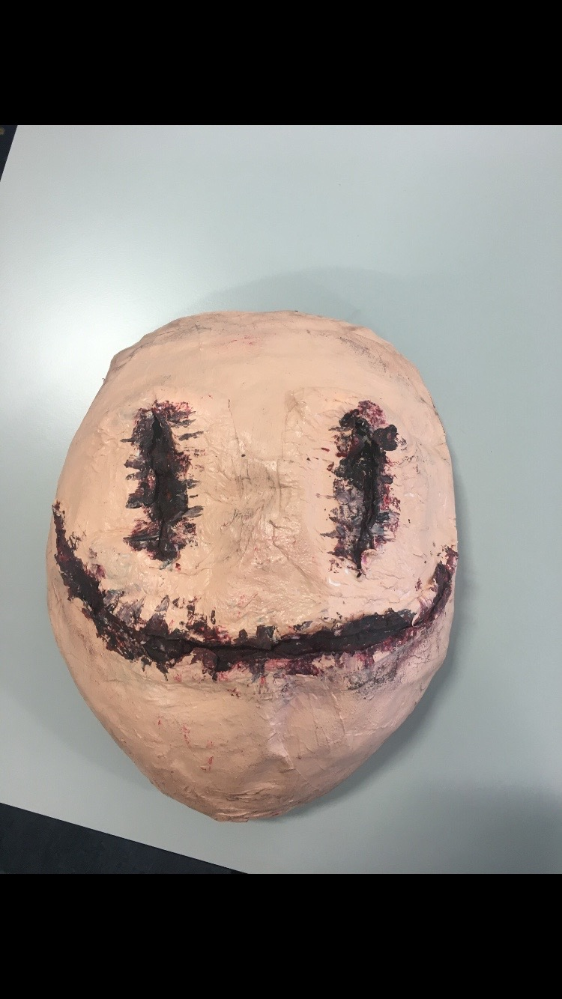
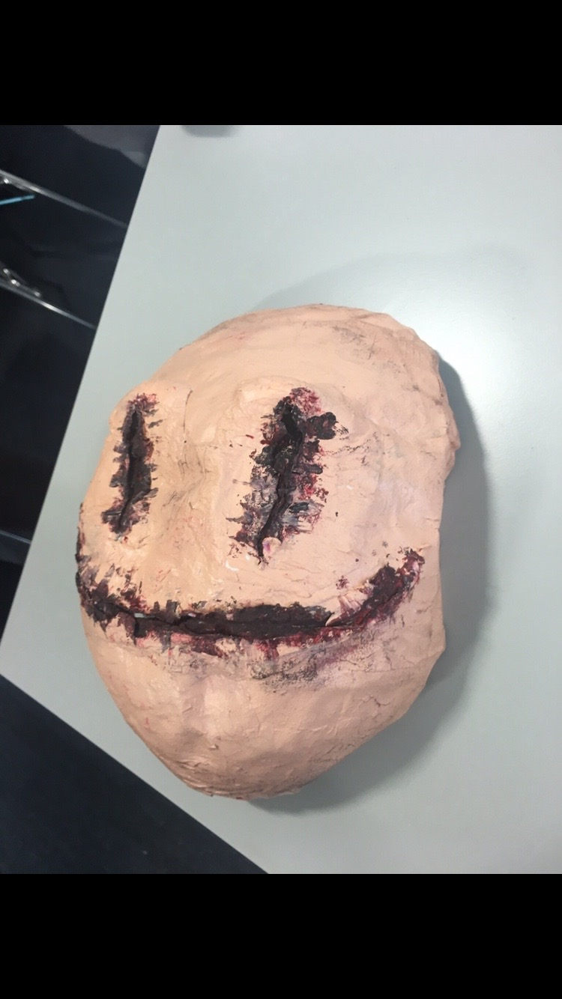

Design
Design is something I have gained through my first semester and now second semester using illustrater and Photoshop this is one of my other favourite things about my course.Here is some of my work that I have done so far
 
My first assignment that I had to do was to design a mask I got my idea for the Smiley mask from the film Smiley which is a horror film. I thought this would be a good idea because it was around Halloween time .The materials I used to make my mask included news paper and glue to make paper mache , a balloon ,masking tape ,glue, liquid latex, scissors, paint and fake blood.


These are some things I practiced on Adobe Ilustrater when I first started using it